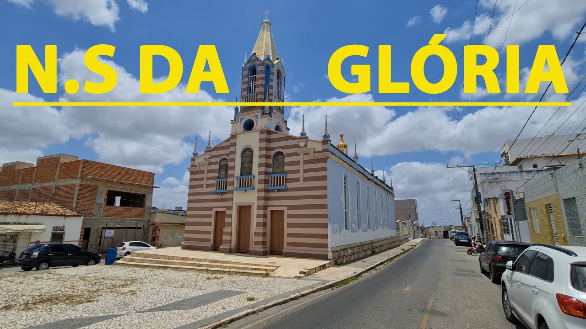

O que eu mais gosto em Nossa Senhora da Glória
Praça de eventos

A praça de eventos de Nossa Senhora da Glória conta com diversos espaços para praticar esportes, como a quadra de areia, a quadra de poliesportiva, além de rampas e corrimãos para a prática de esportes radicais. A praça de esportes proporciona lazer aos habitantes de Nossa Senhora da Glória incentivando os locais a praticarem esportes e terem um tempo de lazer.
Praça da Igreja Matriz

A praça da Igreja Matriz conhecida também como igreja velha é um ponto que guarda muita história do povo gloriense.
Igreja Nova

A praça da igreja nova é uma espécie de suscessora da Igreja Matriz.
E existem outros locais para se visitar na cidade...
- Praça dos três quiosques
- Praça do coreto
- Ginásio de esportes Padre Leon Gregório